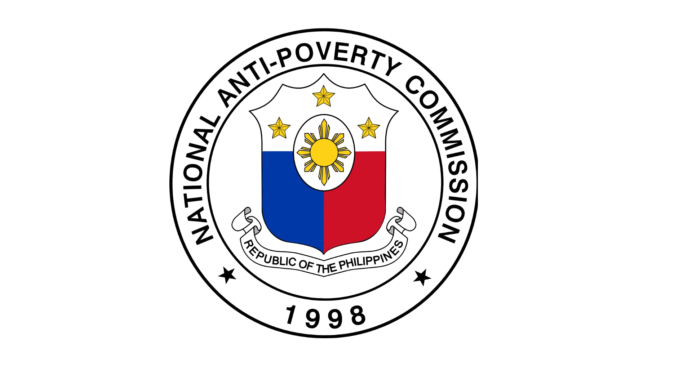
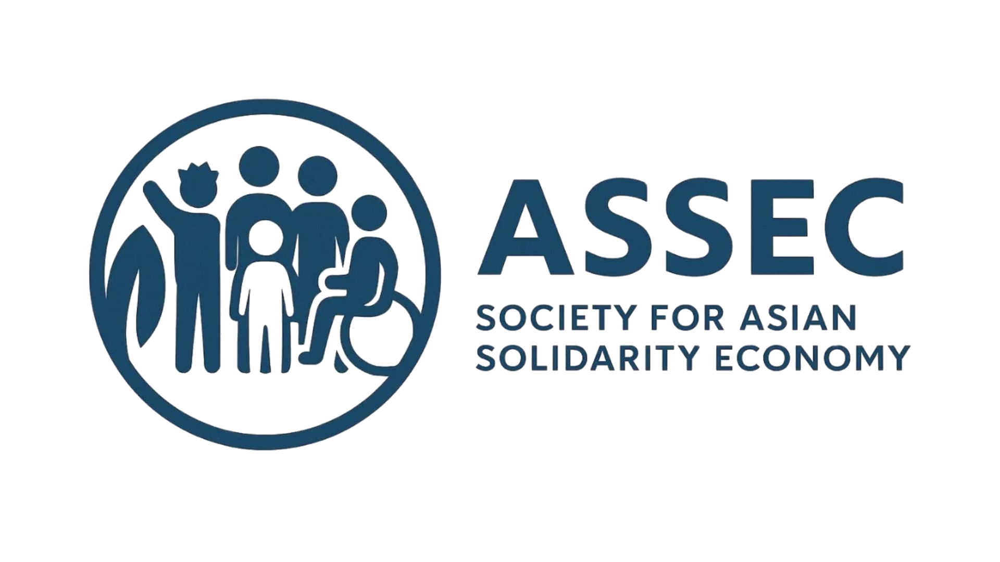
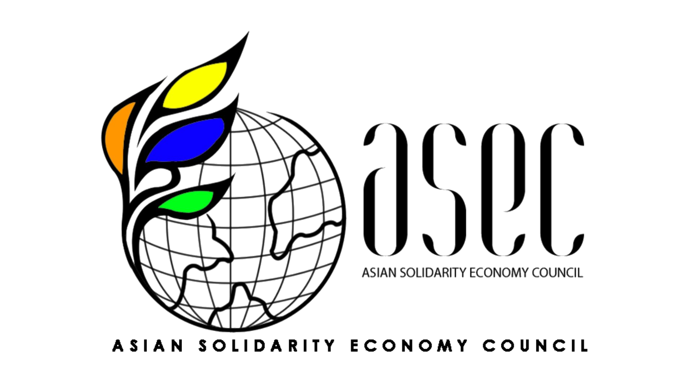
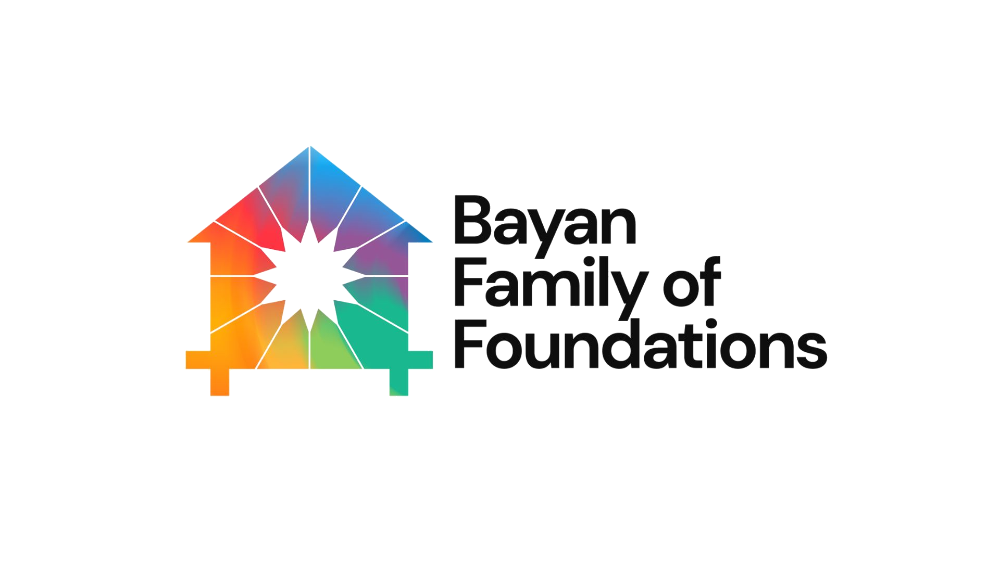
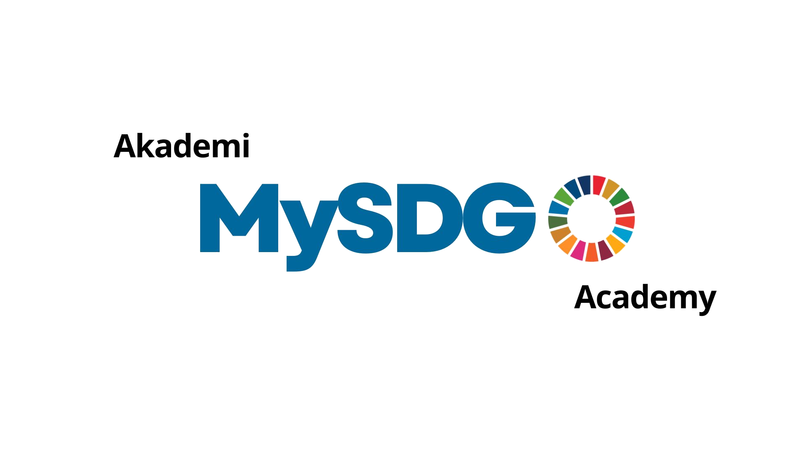
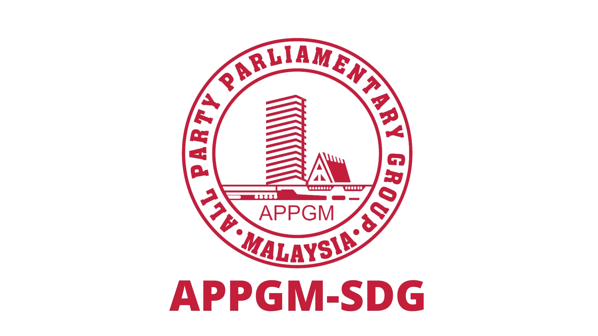

Organized by









Understanding the vision, structure, and strategic significance of this landmark regional forum.
As the Philippines assumes the Chairmanship of ASEAN in 2026, the National Anti-Poverty Commission (NAPC) faces a strategic imperative: to transition the narrative of poverty alleviation from "social welfare" to inclusive economic integration.
This conference serves as the Philippines' official launchpad for the ASEAN Social and Solidarity Economy (SSE) SDG Roadmap (2026–2030), in line with UN resolutions recognizing SSE as a key driver for inclusive and sustainable development.
The initiative brings together top executives, policy leaders, ASEAN sectoral body representatives, and international SSE practitioners to align regional stakeholders and mobilize commitments for transformative change.
Structured in response to ASEAN NOC directives, combining virtual reach with in-person impact.
A high-level virtual gathering for top executives, policy leaders, and ASEAN sectoral body representatives. Available via Zoom, Facebook, and YouTube.
A full-scale, three-day in-person conference (flexible to hybrid/virtual) at the Quezon City M.I.C.E. Center, culminating in the formal launch of the People's Bayanihan Fund.
Eight expert-led panels addressing the most critical dimensions of the SSE-SDG agenda.
Official host agency; liaison with ASEAN Secretariat; oversight of basic sector participation. Works within the Prosperity Corridors pillar.
Official host LGU — virtual host for May, physical host for October conference. Pilot city for the People's Bayanihan Fund Community Wealth Building model.
Regional content management; invitation and coordination of ASEAN delegates; alignment with the SDG-SSE Roadmap framework.
Secretariat and logistics (virtual platform for May; onsite logistics for October); private sector resource mobilization; management of People's Bayanihan Fund mechanics.
The centerpiece of the 2026 initiative is the People's Bayanihan Fund — a pioneering "Public-Private-Community" partnership model that operationalizes Republic Act No. 8425 and addresses the Missing Middle financing gap facing Social and Solidarity Economy organizations.
This systemic solution transforms beneficiaries from the 14 basic sectors into bankable borrowers and makes the community the investor in its own economic growth.
Anchored in Law
Republic Act No. 8425 — Social Reform and Poverty Alleviation Act, operationalized through the People's Development Trust Fund (PDTF).
Capacity building via NAPC-PDTF — financial literacy, feasibility studies, and impact measurement that transform beneficiaries into bankable borrowers.
Capital mobilization via Rural Banks & Microfinance Institutions, with Social Impact Bonds as credit guarantees issued through LGUs.
Market creation through the Community Wealth Building Model — LGU anchor institutions directing procurement to local social enterprises.
Grassroots equity — community members can co-invest starting at ₱100, earning dividends from the growth of their own local economy.






For questions about the conference, registration, or partnership opportunities, get in touch with the organizing secretariat.
Connect with government leaders, international experts, and development practitioners from across ASEAN and the world.
Register Here →